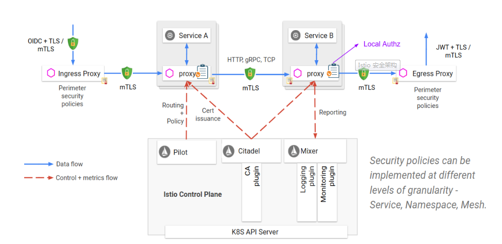
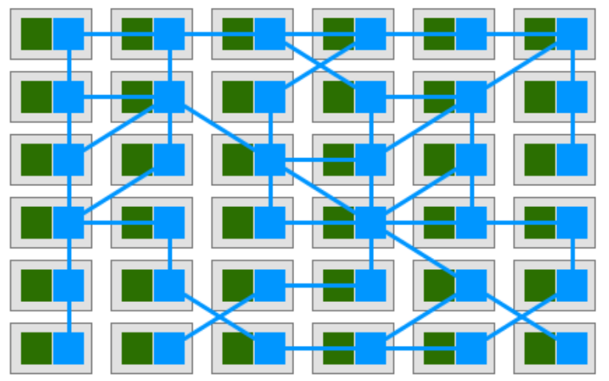
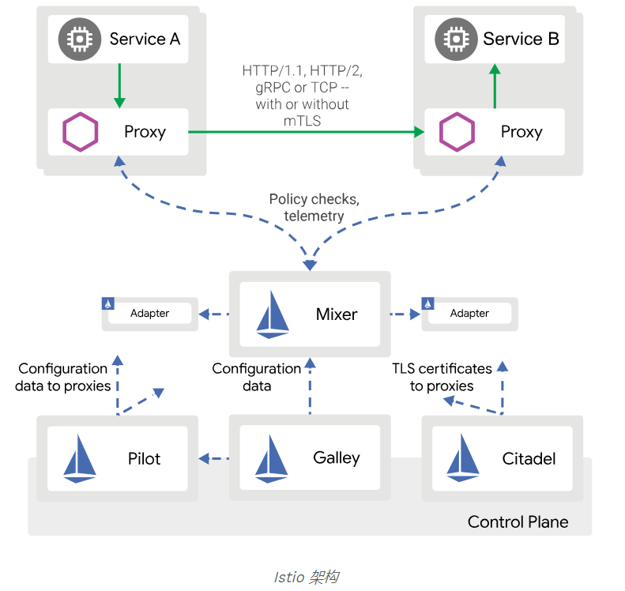

TOC
本文简要的介绍了什么是istio、架构、组件，以及在k8s的安装部署步骤。
Istio的架构
什么是istio
服务网格（Service Mesh）这个术语通常用于描述构成应用程序的微服务网络以及应用之间的交互。随着规模和复杂性的增长，服务网格越来越难以理解和管理。它的需求包括服务发现、负载均衡、故障恢复、指标收集和监控以及通常更加复杂的运维需求，例如 A/B 测试、金丝雀发布、限流、访问控制和端到端认证等。
Istio是Google继Kubernetes之后的又一开源力作，它提供了一个完整的解决方案，通过为整个服务网格提供行为洞察和操作控制来满足微服务应用程序的多样化需求。
在较高的层次上，Istio 有助于降低这些部署的复杂性，并减轻开发团队的压力。它是一个完全开源的服务网格，可以透明地分层到现有的分布式应用程序上。它也是一个平台，包括允许它集成到任何日志记录平台、遥测或策略系统的 API。Istio 的多样化功能集使您能够成功高效地运行分布式微服务架构，并提供保护、连接和监控微服务的统一方法。
下图是istio的一个架构示意图

为什么要用istio
k8s提供的是容器的编排和调度能力，利用service的机制来做服务注册、发现和转发，通过kubeproxy有一定的转发和负载均衡能力。但k8s并不具备上层如熔断、限流降级、调用链治理等能力。
而istio提供了完整的非侵入式的微服务治理解决方案，包含微服务的管理、网络连接以及安全管理等关键能力，无需修改任何代码就能够实现微服务的负载均衡，服务与服务之间的认证授权以及监控。从整个基础设施角度上看，可以将它理解为PaaS平台上的一个面向微服务管理平台的补充。
另外，k8s提供的sidecar模式，可以很优雅的和service mesh相结合，而不是侵入式的！这个是我认为istio可以在k8s大行其道的核心竞争力!

istio 提供一种简单的方式来为已部署的服务建立网络，该网络具有负载均衡、服务间认证、监控等功能，只需要对服务的代码进行一点或不需要做任何改动。想要让服务支持 Istio，只需要在环境中部署一个特殊的 sidecar 代理，使用 Istio 控制平面功能配置和管理代理，拦截微服务之间的所有网络通信：
- HTTP、gRPC、WebSocket 和 TCP 流量的自动负载均衡。
- 通过丰富的路由规则、重试、故障转移和故障注入，可以对流量行为进行细粒度控制。
- 可插入的策略层和配置 API，支持访问控制、速率限制和配额。
- 对出入集群入口和出口中所有流量的自动度量指标、日志记录和追踪。
- 通过强大的基于身份的验证和授权，在集群中实现安全的服务间通信。
架构图

组件简要说明
Proxy / Envoy每个微服务的Sidecar代理，用于处理集群中服务之间以及从服务到外部服务之间的入口/出口流量。Envoy 被部署为 sidecar，和对应服务在同一个 Kubernetes pod 中。这允许 Istio 将大量关于流量行为的信号作为属性提取出来，而这些属性又可以在 Mixer 中用于执行策略决策，并发送给监控系统，以提供整个网格行为的信息。Sidecar 代理模型还可以将 Istio 的功能添加到现有部署中，而无需重新构建或重写代码。- 动态服务发现
- 负载均衡
- TLS 终止
- HTTP/2 & gRPC 代理
- 熔断器
- 健康检查、基于百分比流量拆分的灰度发布
- 故障注入
- 丰富的度量指标
Mixer是一个独立于平台的组件，负责在服务网格上执行访问控制和使用策略，并从 Envoy 代理和其他服务收集遥测数据。- 代理提取请求级属性，发送到 Mixer 进行评估。在基础架构级别实施ACL，速率限制，配额，身份验证，请求跟踪和遥测收集等策略。
- Mixer 中包括一个灵活的插件模型，使其能够接入到各种主机环境和基础设施后端，从这些细节中抽象出 Envoy 代理和 Istio 管理的服务。
Pilot负责在运行时配置Envoy和Mixer。- 它将控制流量行为的高级路由规则转换为特定于 Envoy 的配置，并在运行时将它们传播到 sidecar。
- Pilot 将平台特定的服务发现机制抽象化并将其合成为符合 Envoy 数据平面 API 的任何 sidecar 都可以使用的标准格式。这种松散耦合使得 Istio 能够在多种环境下运行（例如，Kubernetes、Consul、Nomad），同时保持用于流量管理的相同操作界面。
GalleyGalley 代表其他的 Istio 控制平面组件，用来验证用户编写的 Istio API 配置。随着时间的推移，Galley 将接管 Istio 获取配置、 处理和分配组件的顶级责任。它将负责将其他的 Istio 组件与从底层平台（例如 Kubernetes）获取用户配置的细节中隔离开来。Citadel通过内置身份和凭证管理赋能强大的服务间和最终用户身份验证。- 可用于升级服务网格中未加密的流量，并为运维人员提供基于服务标识而不是网络控制的强制执行策略的能力。
- 提供密钥管理系统，以自动化密钥和证书生成，分发，轮换和撤销。
- 从 0.5 版本开始，Istio 支持基于角色的访问控制，以控制谁可以访问您的服务，而不是基于不稳定的三层或四层网络标识。
Ingress/Egress为入站和出站外部流量配置基于路径的路由。Control Plane API基础Orchestrator，如Kubernetes或Hashicorp Nomad。
安装
在k8s上的安装步骤
1.下载istio安装包
到 https://github.com/istio/istio/releases 去下载对应目标操作系统的安装文件
当然也可以直接下载
curl -L https://git.io/getLatestIstio | ISTIO_VERSION=1.2.2 sh -
进入 Istio 包目录
# cd istio-1.2.2/
# ls
bin install istio.VERSION LICENSE README.md samples tools
安装目录中包含：
- install/ 目录中包含了 Kubernetes 安装所需的 .yaml 文件
- samples/ 目录中是示例应用
- istioctl 客户端文件保存在 bin/ 目录之中。istioctl 的功能是手工进行 Envoy Sidecar 的注入。
- istio.VERSION 配置文件
2.安装 Istio 的CRD
安装:
for i in install/kubernetes/helm/istio-init/files/crd*yaml; do kubectl apply -f $i; done
安装完成后:
# kubectl get crds
NAME CREATED AT
adapters.config.istio.io 2019-07-04T08:43:18Z
attributemanifests.config.istio.io 2019-07-04T08:43:18Z
authorizationpolicies.rbac.istio.io 2019-07-04T08:43:19Z
certificates.certmanager.k8s.io 2019-07-04T08:43:19Z
challenges.certmanager.k8s.io 2019-07-04T08:43:19Z
clusterissuers.certmanager.k8s.io 2019-07-04T08:43:19Z
clusterrbacconfigs.rbac.istio.io 2019-07-04T08:43:18Z
destinationrules.networking.istio.io 2019-07-04T08:43:18Z
envoyfilters.networking.istio.io 2019-07-04T08:43:18Z
gateways.networking.istio.io 2019-07-04T08:43:18Z
handlers.config.istio.io 2019-07-04T08:43:18Z
httpapispecbindings.config.istio.io 2019-07-04T08:43:18Z
httpapispecs.config.istio.io 2019-07-04T08:43:18Z
instances.config.istio.io 2019-07-04T08:43:18Z
issuers.certmanager.k8s.io 2019-07-04T08:43:19Z
meshpolicies.authentication.istio.io 2019-07-04T08:43:18Z
orders.certmanager.k8s.io 2019-07-04T08:43:19Z
policies.authentication.istio.io 2019-07-04T08:43:18Z
quotaspecbindings.config.istio.io 2019-07-04T08:43:18Z
quotaspecs.config.istio.io 2019-07-04T08:43:18Z
rbacconfigs.rbac.istio.io 2019-07-04T08:43:18Z
rules.config.istio.io 2019-07-04T08:43:18Z
serviceentries.networking.istio.io 2019-07-04T08:43:18Z
servicerolebindings.rbac.istio.io 2019-07-04T08:43:18Z
serviceroles.rbac.istio.io 2019-07-04T08:43:18Z
sidecars.networking.istio.io 2019-07-04T08:43:19Z
templates.config.istio.io 2019-07-04T08:43:18Z
virtualservices.networking.istio.io 2019-07-04T08:43:18Z
3.安装宽容模式的组件和服务
所谓宽容模式,是这样的场景适用于以下:
- 已有应用的集群
- 注入了 Istio sidecar 的服务有和非 Istio Kubernetes 服务通信的需要
- 需要进行存活和就绪检测的应用
- Headless 服务
- StatefulSet
既然有宽容模式,当然也会有严格模式,它的适用场景:
- 这种模式会在所有的客户端和服务器之间使用 双向 TLS。
- 这种模式只适合所有工作负载都受 Istio 管理的 Kubernetes 集群。所有新部署的工作负载都会注入 Istio sidecar。
- 安装方法:
kubectl apply -f install/kubernetes/istio-demo-auth.yaml
因为是在已有的应用的集群上安装,所以采用的是宽容模式
kubectl apply -f install/kubernetes/istio-demo.yaml
注意:不需要单独创建namespace: istio-system,yaml中已经包含有了!
安装完成过一会儿检查: pods:
# kubectl get pod -n istio-system
NAME READY STATUS RESTARTS AGE
grafana-6fb9f8c5c7-9tnfn 1/1 Running 0 18h
istio-citadel-68c85b6684-s4vsx 1/1 Running 0 18h
istio-cleanup-secrets-1.2.2-2wbnf 0/1 Completed 0 18h
istio-egressgateway-5f7889bf58-gvn2c 1/1 Running 0 18h
istio-galley-77d697957f-vdsxq 1/1 Running 0 18h
istio-grafana-post-install-1.2.2-6zjp4 0/1 Completed 0 18h
istio-ingressgateway-b955ddfc4-zmbbf 1/1 Running 0 18h
istio-pilot-d744c86b7-kdmsv 2/2 Running 0 18h
istio-policy-778cc8647f-7pkzp 2/2 Running 6 18h
istio-security-post-install-1.2.2-d9lmt 0/1 Completed 0 18h
istio-sidecar-injector-66549495d8-l5p7g 1/1 Running 0 18h
istio-telemetry-57c46b4f6b-82wqb 2/2 Running 6 18h
istio-tracing-5d8f57c8ff-q6zmj 1/1 Running 0 18h
kiali-7d749f9dcb-ccx7f 1/1 Running 0 18h
prometheus-776fdf7479-2v9ph 1/1 Running 0 18h
svc:
# kubectl get svc -n istio-system
NAME TYPE CLUSTER-IP EXTERNAL-IP PORT(S) AGE
grafana ClusterIP 10.97.41.248 <none> 3000/TCP 20h
istio-citadel ClusterIP 10.105.42.128 <none> 8060/TCP,15014/TCP 20h
istio-egressgateway ClusterIP 10.111.169.185 <none> 80/TCP,443/TCP,15443/TCP 20h
istio-galley ClusterIP 10.103.130.165 <none> 443/TCP,15014/TCP,9901/TCP 20h
istio-ingressgateway NodePort 10.98.7.252 <none> 15020:14258/TCP,80:31380/TCP,443:31390/TCP,31400:31400/TCP,15029:34236/TCP,15030:36304/TCP,15031:30107/TCP,15032:37550/TCP,15443:14718/TCP 20h
istio-pilot ClusterIP 10.104.167.145 <none> 15010/TCP,15011/TCP,8080/TCP,15014/TCP 20h
istio-policy ClusterIP 10.97.38.225 <none> 9091/TCP,15004/TCP,15014/TCP 20h
istio-sidecar-injector ClusterIP 10.107.7.102 <none> 443/TCP 20h
istio-telemetry ClusterIP 10.101.129.171 <none> 9091/TCP,15004/TCP,15014/TCP,42422/TCP 20h
jaeger-agent ClusterIP None <none> 5775/UDP,6831/UDP,6832/UDP 20h
jaeger-collector ClusterIP 10.106.186.132 <none> 14267/TCP,14268/TCP 20h
jaeger-query ClusterIP 10.104.139.212 <none> 16686/TCP 20h
kiali ClusterIP 10.109.83.19 <none> 20001/TCP 20h
prometheus ClusterIP 10.103.246.130 <none> 9090/TCP 20h
tracing ClusterIP 10.108.248.50 <none> 80/TCP 20h
zipkin ClusterIP 10.105.180.170 <none> 9411/TCP 20h
需要注意的是
istio-ingressgateway这个服务,在模板里面默认用的是lb,但是如果没有lb的环境部署的时候,CLUSTER-IP这一列的状态会是pending或者none,只需要将svc的type改为NodePort即可。
参考:
https://istio.io/zh/docs/setup/kubernetes/install/kubernetes/